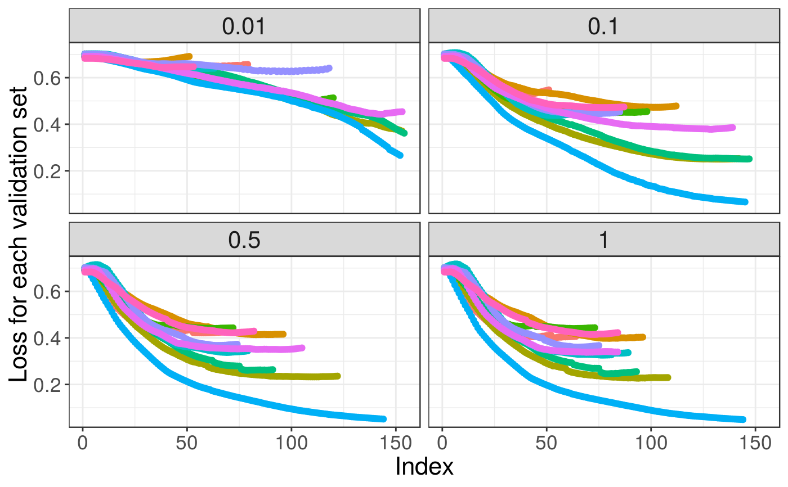
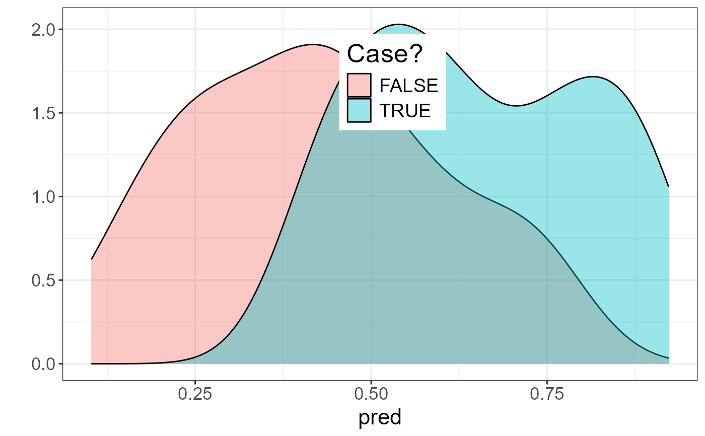

Fit lasso (or elastic-net) penalized logistic regression for a Filebacked Big Matrix. Covariables can be added (/!\ penalized by default /!\).
big_spLogReg(
X,
y01.train,
ind.train = rows_along(X),
ind.col = cols_along(X),
covar.train = NULL,
base.train = NULL,
pf.X = NULL,
pf.covar = NULL,
alphas = 1,
power_scale = 1,
power_adaptive = 0,
K = 10,
ind.sets = NULL,
nlambda = 200,
nlam.min = 50,
n.abort = 10,
dfmax = 50000,
warn = TRUE,
ncores = 1,
...
)An object of class FBM.
Vector of responses, corresponding to ind.train.
Must be only 0s and 1s.
An optional vector of the row indices that are used, for the training part. If not specified, all rows are used. Don't use negative indices.
An optional vector of the column indices that are used. If not specified, all columns are used. Don't use negative indices.
Matrix of covariables to be added in each model to correct
for confounders (e.g. the scores of PCA), corresponding to ind.train.
Default is NULL and corresponds to only adding an intercept to each model.
You can use covar_from_df() to convert from a data frame.
Vector of base predictions. Model will be learned starting from these predictions. This can be useful if you want to previously fit a model with large-effect variables that you don't want to penalize.
A multiplicative factor for the penalty applied to each coefficient.
If supplied, pf.X must be a numeric vector of the same length as ind.col.
Default is all 1. The purpose of pf.X is to apply differential
penalization if some coefficients are thought to be more likely than others
to be in the model. Setting SOME to 0 allows to have unpenalized coefficients.
Same as pf.X, but for covar.train.
You might want to set some to 0 as variables with large effects can mask
small effects in penalized regression.
The elastic-net mixing parameter that controls the relative
contribution from the lasso (l1) and the ridge (l2) penalty. The penalty is
defined as $$ \alpha||\beta||_1 + (1-\alpha)/2||\beta||_2^2.$$
alpha = 1 is the lasso penalty and alpha in between 0
(1e-4) and 1 is the elastic-net penalty. Default is 1. You can
pass multiple values, and only one will be used (optimized by grid-search).
When using lasso (alpha = 1), penalization to apply that
is equivalent to scaling genotypes dividing by (standard deviation)^power_scale.
Default is 1 and corresponding to standard scaling. Using 0 would correspond
to using unscaled variables and using 0.5 is Pareto scaling. If you e.g. use
power_scale = c(0, 0.5, 1), the best value in CMSA will be used
(just like with alphas).
Multiplicative penalty factor to apply to variables
in the form of 1 / m_j^power_adaptive, where m_j is the marginal statistic
for variable j. Default is 0, which effectively disables this option.
If you e.g. use power_adaptive = c(0, 0.5, 1.5), the best value in CMSA
will be used (just like with alphas).
Number of sets used in the Cross-Model Selection and Averaging
(CMSA) procedure. Default is 10.
Integer vectors of values between 1 and K specifying
which set each index of the training set is in. Default randomly assigns
these values but it can be useful to set this vector for reproducibility,
or if you want to refine the grid-search over alphas using the same sets.
The number of lambda values. Default is 200.
Minimum number of lambda values to investigate. Default is 50.
Number of lambda values for which prediction on the validation
set must decrease before stopping. Default is 10.
Upper bound for the number of nonzero coefficients. Default is
50e3 because, for large data sets, computational burden may be
heavy for models with a large number of nonzero coefficients.
Whether to warn if some models may not have reached a minimum.
Default is TRUE.
Number of cores used. Default doesn't use parallelism. You may use nb_cores.
Arguments passed on to COPY_biglasso_main
lambda.min.ratioThe smallest value for lambda, as a fraction of
lambda.max. Default is .0001 if the number of observations is larger than
the number of variables and .001 otherwise.
epsConvergence threshold for inner coordinate descent.
The algorithm iterates until the maximum change in the objective after any
coefficient update is less than eps times the null deviance.
Default value is 1e-5.
max.iterMaximum number of iterations. Default is 1000.
return.allDeprecated. Now always return all models.
Return an object of class big_sp_list (a list of length(alphas)
x K) that has 3 methods predict, summary and plot.
This is a modified version of one function of
package biglasso.
It adds the possibility to train models with covariables and use many
types of FBM (not only double ones).
Yet, it only corresponds to screen = "SSR" (Sequential Strong Rules).
Also, to remove the choice of the lambda parameter, we introduce the Cross-Model Selection and Averaging (CMSA) procedure:
This function separates the training set in K folds (e.g. 10).
In turn,
each fold is considered as an inner validation set and the others (K - 1) folds form an inner training set,
the model is trained on the inner training set and the corresponding predictions (scores) for the inner validation set are computed,
the vector of scores which maximizes log-likelihood is determined,
the vector of coefficients corresponding to the previous vector of scores is chosen.
The K resulting vectors of coefficients are then averaged into one final
vector of coefficients.
Tibshirani, R., Bien, J., Friedman, J., Hastie, T., Simon, N., Taylor, J. and Tibshirani, R. J. (2012), Strong rules for discarding predictors in lasso-type problems. Journal of the Royal Statistical Society: Series B (Statistical Methodology), 74: 245-266. doi:10.1111/j.1467-9868.2011.01004.x .
Zeng, Y., and Breheny, P. (2017). The biglasso Package: A Memory- and Computation-Efficient Solver for Lasso Model Fitting with Big Data in R. doi:10.32614/RJ-2021-001 .
Privé, F., Aschard, H., and Blum, M. G.B. (2019). Efficient implementation of penalized regression for genetic risk prediction. Genetics, 212: 65-74. doi:10.1534/genetics.119.302019 .
set.seed(2)
# simulating some data
N <- 230
M <- 730
X <- FBM(N, M, init = rnorm(N * M, sd = 5))
y01 <- as.numeric((rowSums(X[, 1:10]) + 2 * rnorm(N)) > 0)
covar <- matrix(rnorm(N * 3), N)
ind.train <- sort(sample(nrow(X), 150))
ind.test <- setdiff(rows_along(X), ind.train)
# fitting model for multiple lambdas and alphas
test <- big_spLogReg(X, y01[ind.train], ind.train = ind.train,
covar.train = covar[ind.train, ],
alphas = c(1, 0.1), K = 3, warn = FALSE)
# peek at the models
plot(test)

summary(test, sort = TRUE)
#> # A tibble: 2 × 9
#> alpha power_adaptive power_scale validation_loss intercept beta nb_var
#> <dbl> <dbl> <dbl> <dbl> <dbl> <list> <int>
#> 1 1 0 1 0.541 0.113 <dbl [733]> 99
#> 2 0.1 0 1 0.588 0.123 <dbl [733]> 158
#> # ℹ 2 more variables: message <list>, all_conv <lgl>
summary(test, sort = TRUE)$message
#> [[1]]
#> [1] "No more improvement" "No more improvement" "No more improvement"
#>
#> [[2]]
#> [1] "No more improvement" "No more improvement" "No more improvement"
#>
# prediction for other data -> only the best alpha is used
summary(test, best.only = TRUE)
#> # A tibble: 1 × 9
#> alpha power_adaptive power_scale validation_loss intercept beta nb_var
#> <dbl> <dbl> <dbl> <dbl> <dbl> <list> <int>
#> 1 1 0 1 0.541 0.113 <dbl [733]> 99
#> # ℹ 2 more variables: message <list>, all_conv <lgl>
pred <- predict(test, X, ind.row = ind.test, covar.row = covar[ind.test, ])
AUC(pred, y01[ind.test])
#> [1] 0.8232323
library(ggplot2)
#> Warning: package 'ggplot2' was built under R version 4.2.3
qplot(pred, fill = as.logical(y01[ind.test]),
geom = "density", alpha = I(0.4)) +
labs(fill = "Case?") +
theme_bigstatsr() +
theme(legend.position = c(0.52, 0.8))
#> Warning: `qplot()` was deprecated in ggplot2 3.4.0.
#> Warning: A numeric `legend.position` argument in `theme()` was deprecated in ggplot2
#> 3.5.0.
#> ℹ Please use the `legend.position.inside` argument of `theme()` instead.
